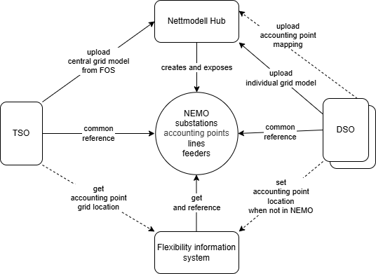
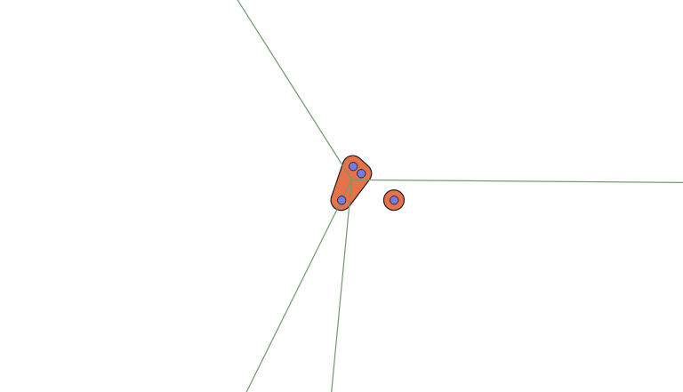
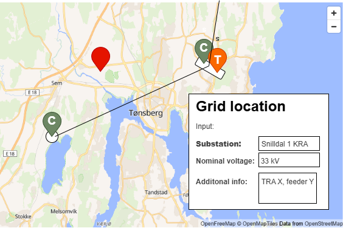

Accounting point grid location
This document shows how location for accounting points are handled in the flexibility register. The location is used in the grid-model use-cases.
Grid location means the electrical or topological location in the grid. This is different from the geographical location, given as coordinates or address.
Since a controllable unit is always "behind" an accounting point, the grid location on accounting point will give the location for the CUs as well.
Accounting point geographical location
The accounting point geographical location is loaded as part of the accounting point data sync. This location is used for displaying the accounting point on a map to visually aid the DSO in picking the right grid location.
Since we also know the geographical location of the different parts of the grid model, we can also use the geographical location of the accounting point to make an educated guess on the grid location.
Common grid model as reference
The grid location of accounting points is used to facilitate collaboration and coordination between grid owners on different levels. An example is that a regional or transmission system operator needs to know the grid location of a controllable unit connected in a distribution system operators grid to be able to assess if activation of flexibility services will compromise safe operation of their grid.
To be able to communicate efficiently, both the connecting and impacted/procuring system operator must have a common reference - a common grid model that they can use to communicate location.
This also means that each system operator must have a mapping or connection from their individual grid model to a common grid model.
The Norwegian common grid model is Nemo from Elbits.
Nemo is used by Tilko, a digital portal for grid connection requests that affects more than one grid owner. Tilko has been rolled out to almost all of Norway as of writing this. We are taking a lot inspiration from Tilko in how we exchange grid location.
Common grid model basics
The Nemo model is modelled in Resource Description Framework (RDF), allowing for a representation of a graph as a set of triples.
The main objects are
- Substation : the "main" station - hovedstasjon
- SubstationPart : a part of a substation - understasjon
- Line : grid connections between substations
An important field on these objects are their unique business identifiers - mRID. mRID is the Master resource identifier issued by a model authority, in this case Elbits/Nemo. This unique identifier allows us to reference the objects in the common grid model.
Accounting points in grid model
Work is ongoing to add accounting points to the common grid model. This will be done in one of two ways:
- combining the individual grid models of TSO and DSO and traversing the grid to set location
- DSOs doing the mapping in their NIS and exporting the grid location directly for inclusion in the common grid model
Once this is in place, this will become the authoritative source of grid location for accounting points. It is assumed that the information will be added gradually - system operator by system operator.
Accounting points will point to the most specific point in the grid model as possible. This could be a substation, transformer or feeder.
The flow of information can be visualised as follows.

Grid model service
Grid model data will be made available as its own service in the flexibility register. The grid model service will serve data as an aid in picking the grid location.
We model a condensed data model with the following resources in this service, based on Nemo.
substationfromSubstationandSubstationPartlinefromLine
substation
The substation resource is modelling
elb:SubstationPart
and cim:Substation as
a single resource. This is based on an understanding that the substationpart as
a name/concept will not be used in future versions of a common grid model.
We use substation kind and a foreign key to distinguish between the two. If the substation does not have a kind, then it is a child substation. A child substation will also have a foreign key to its parent substation.
The following fields exist on the substation resource
| Field name | Description | Format | Example | Nullable | Note |
|---|---|---|---|---|---|
| id | Surrogate identifier | Integer | 1234 | no | |
| name | Name of the substation. | Free text | Snilldal 1 KRA | no | |
| business_id | Business identifier for the substation - mRID | UUID | 550e8400-e29b-41d4-a716-446655440000 | no | |
| business_id_type | Type of business identifier. | uuid |
uuid | no | |
| kind | Kind of substation | coupling, junction, power, transformer |
coupling | yes | |
| substation_id | Foreign key to parent substation. | Integer | 1234 | yes | |
| longitude | Longitude of the substation. | Numeric | 10.1234 | yes | Center for parent |
| latitude | Latitude of the substation. | Numeric | 63.1234 | yes | Center for parent |
| nominal_voltage_levels | List of voltage levels on the substation and parent. | Array of numeric. kV with three decimals. | [22, 33] | yes | Extracted from BaseVoltage |
| concessionaires | Name and org number of the main concessionaires. | Array of free text | ["SønderEnergi Nett (987654321)"] | yes | |
| geometry | For displaying on a map. GeoJSON Polygon or Point. | GeoJSON Polygon or Point | See GeoJSON Geometry | yes |
line
| Field name | Description | Format | Example | Nullable | Note |
|---|---|---|---|---|---|
| id | Surrogate identifier | Integer | 1234 | no | |
| name | Name of the line. | Free text | Snilldal-Høyeng | no | |
| business_id | Business identifier for the line - mRID | UUID | 123e4567-e89b-12d3-a456-426614174000 | no | |
| business_id_type | Type of business identifier. Just uuid |
uuid |
uuid | no | |
| from_substation_id | Foreign key to the substation the line starts at | Integer | 1234 | no | |
| from_nominal_voltage | Voltage level on the line. kV. | Numeric | 22 | no | Extracted from BaseVoltage |
| to_substation_id | Foreign key to the substation the line ends at | Integer | 1234 | no | |
| to_nominal_voltage | Voltage level on the line. kV. | Numeric | 22 | no | Extracted from BaseVoltage |
| consessionaires | Name and org number of the main consessionaires. | Array of free text | ["SønderEnergi Nett (987654321)"] | yes | |
| geometry | For displaying on a map. GeoJSON LineString. | GeoJSON LineString | See GeoJSON Geometry | yes |
GeoJSON Geometry
We are storing a GeoJSON geometry for both substations and lines. This is for displaying the grid model on a map.
This is how we derive the geometry.
| Nemo type | Geometry type | Description |
|---|---|---|
| SubstationPart | Point | We use the Location of the SubstationPart. |
| Substation | Polygon | The convex hull of the Location of the SubstationParts, with a fixed buffer. |
| Line | LineString | Line from center to center of to/from Substations. Center is the average of the SubstationPart locations. |
This allows us to display the three things. Shown in the example below. The example shows two main substations. One has three children and a few connecting lines. The other one has just one and no connections. This should of course be displayed on top of a map.

Note
The Point geometry should probably use pins for location. That allows us to use different colors and icons/letters for different kinds of substations. See example below.
Provisioning of data
We do a full load of the grid model data following the structure data loading mechanisms. We load using merge and update using the automatic strategy.
Resources that we have previously loaded but is now not present in the current load will be soft-deleted using a specific field on the resources.
Location = Grid model reference + Voltage level
The grid owner registers the electrical grid location of an accounting point. The location should be given as a reference to the common grid model. The reference should also be given to the most specific point in the grid as available.
The information is given in a dedicated resource
accounting_point_grid_location containing the following fields.
Note
We are using business ids and free text names here on purpose. This is because we believe that in general system operators will communicate grid location directly, using Nemo as reference. Using FIS surrogate keys is not recommended in this context.
| Field name | Description | Format | Example | Nullable | Note |
|---|---|---|---|---|---|
object_type |
The type of object in the grid model | substation, transformer |
substation | no | |
business_id |
Business ID (mRID) referencing national grid model | UUID | 123e4567-e89b-12d3-a456-426614174000 | yes | |
name |
Name of the grid model object | Free text | Snilldal 1 KRA | no | |
nominal_voltage |
Voltage level in kV | Numeric value | 22 | no | |
additional_information |
Additional information about the grid location | Free text | yes | ||
source |
Who the grid location was determined by | cso, so, grid_model, system |
cso | no | |
quality |
The quality of the grid location registration | confirmed, guessed |
confirmed | no |
Location source
As seen by the source field in the table above, we also want to keep track of
how the grid location was determined. The enum values are as follows.
cso- registered by connecting system operator (CSO)so- registered by impacted or procuring system operatorgrid_model- given from common/national grid modelsystem- (guessed) by the flexibility information system
The CSO is responsible for registering and updating the grid location. This is done directly in the flexibility register or via the national grid model.
Another system operator can also register the grid location, but only if it is missing or the current information is determined by system or guessed by another system operator. The purpose of this is to allow the other system operators to improve on system-guessed location while waiting for confirmation from the CSO.
The system will guess the grid location based on the geographical location of the accounting point and the grid model. The system will only guess the grid location if it is missing or the current information is determined by system.
The following table shows what transitions are allowed to update the grid location based on the current source.
| Current ↓ \ New → | grid_model |
cso |
so |
system |
|---|---|---|---|---|
grid_model |
yes | no | no | no |
cso |
yes | yes | no | no |
so |
yes | yes | yes but not transition confirmed→guessed |
no |
system |
yes | yes | yes | yes |
| missing | yes | yes | yes | yes |
The table shows that the priority order of the source is grid_model > cso >
so > system.
Note
Note that transformer is part of the location but not discussed above. We are still debating if/when transformers should be part of the grid location.
Guessing grid location
Since we know the geographical location of the accounting point and substations, we can make an educated guess on the grid location.
The first implementation just picks the closest. But we assume that we will create more elaborate strategies once we see it in action.
Example user interface
This shows an example of how the grid location UI can be in a flexibility register.

Voltage level standardisation
Voltage levels in Nemo are all-over-the-place. For simpler user interaction, we might want to standardise voltage levels. The way we do it is by combining ranges into a single nominal voltage level. The following table shows the thresholds and which nominal voltage level it maps to. If a voltage level equal or higher than a threshold, and lower than the next, then it maps to the given nominal voltage. All voltages are given as kilovolt (kV).
| Threshold | Nominal |
|---|---|
| 0 | 0.23 |
| 0.34 | 0.4 |
| 0.6 | 0.69 |
| 0.8 | 1 |
| 2 | 3.3 |
| 4 | 5 |
| 5.5 | 6.6 |
| 8 | 11 |
| 12 | 15 |
| 18 | 22 |
| 27 | 33 |
| 40 | 47 |
| 55 | 66 |
| 80 | 110 |
| 120 | 132 |
| 200 | 300 |
| 350 | 420 |
Warning
This topic is still up for discussion and we might never do any standardisation at all.